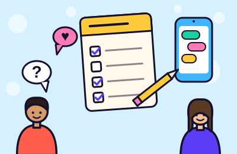
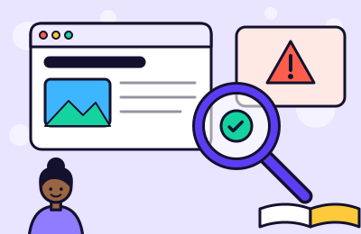
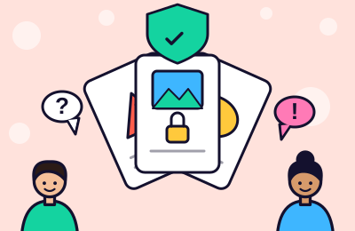
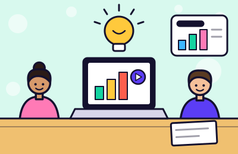
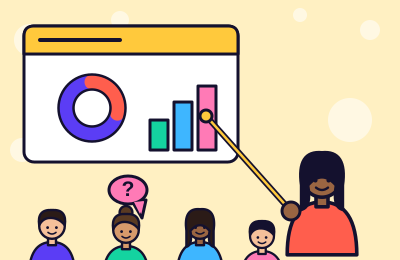
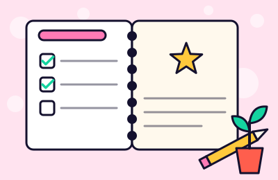

Nombre de la estrategia
Conectados para aprender:
uso educativo y responsable de la tecnología
Uso educativo y responsable de la tecnología.
Para aprender a buscar información confiable
Presentación
Nombre de la estrategia
uso educativo y responsable de la tecnología
El problema que atiende
La tecnología ya forma parte de la vida diaria. Lo importante es aprender a aprovecharla también para estudiar, investigar, crear y resolver problemas. Por eso se parte de lo que cada estudiante ya hace, sin juzgar sus hábitos.
La innovación no está en los aparatos, sino en cómo los usamos. Por eso la propuesta busca desarrollar el pensamiento crítico, la creatividad y la solución de problemas reales, y ofrece alternativas para quienes no tienen internet, para no crear nuevas desigualdades.
Propósito general
Promover el uso educativo y responsable de la tecnología con actividades prácticas y colaborativas.
Justificación
No se trata solo de meter herramientas tecnológicas al salón. Se trata de usarlas con un propósito educativo: pensar, crear y transformar la realidad, no solo manejar aparatos.
La verdadera innovación no está en los dispositivos, sino en cómo los usamos para construir aprendizajes más críticos, participativos e inclusivos.
Y también es una praxis
Seis actividades encadenadas, donde el grupo participa en cada paso y no solo escucha.
Cada herramienta sirve para algo: aprender, crear o resolver. No se usa por usar.
Los estudiantes cuestionan lo que encuentran, comparan fuentes y proponen ideas propias; no solo usan herramientas.
Los estudiantes atienden problemas reales de su escuela y su comunidad, y proponen cómo mejorarlos.
Cada actividad tiene una versión sin internet, para que la innovación no genere nuevas desigualdades.
Los resultados permiten revisar la estrategia y hacer cambios cuando hace falta.
Se empieza por lo que ya hacen con la tecnología y desde ahí se construye.
Se protege la privacidad, se pide permiso para usar imágenes y se respetan los derechos de los demás.
Se trabaja en el aula con los estudiantes y un docente que guía y acompaña. Se conecta con la escuela y la comunidad. El aprendizaje es la meta; la tecnología es solo el medio.
Usa lo que ya hay: celulares compartidos, papel, cuadernos y herramientas gratuitas. Todas las actividades se pueden hacer con o sin internet y sin un dispositivo por estudiante.
No juzga a nadie, cuida la privacidad, pide permiso antes de usar imágenes de otras personas y los compromisos se comparten de forma voluntaria. Ningún estudiante queda fuera por no tener internet.
Actividades
Cada actividad se apoya en la anterior: primero conocemos, luego investigamos, decidimos, creamos, compartimos y reflexionamos. Y todas tienen una versión sin internet, para que nadie se quede fuera. Toca «Ver los pasos» para ver cómo se hace.

Conocemos qué dispositivos y aplicaciones usan, para qué los usan y qué ventajas y dificultades encuentran.
Se obtiene: un diagnóstico del grupo
Sin internet: Encuesta impresa, respuestas levantando la mano y conteo en el pizarrón.

Buscan un tema en distintas páginas, comparan las fuentes y aprenden a distinguir la información confiable de la dudosa.
Se obtiene: una guía de búsquedas seguras
Sin internet: Se comparan fuentes impresas o descargadas antes de clase (libros, periódicos, páginas guardadas) y se pregunta a personas de la comunidad.

Analizan en equipo situaciones de todos los días: una noticia dudosa, una foto compartida sin permiso, comentarios ofensivos.
Se obtiene: una lista de acuerdos del grupo
Sin internet: Las tarjetas de situaciones no necesitan internet: se analizan en equipo, se dramatizan y los acuerdos se escriben en un cartel.

Cada equipo elige una necesidad de su escuela o comunidad y la atiende con un producto digital: infografía, video, presentación o guía.
Se obtiene: un producto digital
Sin internet: El producto puede ser de papel: cartel, periódico mural, guía impresa u obra breve. Si hay un solo dispositivo, los equipos se turnan.

Los equipos exponen sus productos, escuchan preguntas y sugerencias de sus compañeros y mejoran su trabajo.
Se obtiene: productos mejorados
Sin internet: Exposición en el salón con carteles o trabajos impresos; las sugerencias se anotan en hojas o notas adhesivas.

Comparan lo que pensaban al inicio con lo que aprendieron y hacen un compromiso personal con una acción concreta.
Se obtiene: un compromiso personal
Sin internet: Se compara la encuesta impresa del inicio con una hoja de reflexión escrita en el cuaderno.
Recursos
Se usa lo que haya en cada escuela. Y si falta internet o dispositivos, hay un plan B para que todos aprendan lo mismo.
Celulares, computadoras o tabletas, los que haya disponibles.
Acceso a internet cuando sea posible.
Hojas, tarjetas, cuadernos, lápices y pizarrón.
Para crear presentaciones, videos, infografías o guías digitales.
Encuestas, ejemplos de información y situaciones para analizar.
No pasa nada. Las actividades se adaptan a los recursos disponibles y se trabajan en equipo.
La innovación también debe evitar crear nuevas desigualdades. La meta no cambia: pensar con sentido crítico, crear y resolver problemas reales.
Resultados esperados
El punto de partida cambia en cada grupo; por eso la primera actividad lo explora.
Indicadores de evaluación
Se evalúa en tres momentos para conocer los avances y también las dificultades, y se valora el pensamiento crítico y creativo, no solo el uso de herramientas.
Instrumentos
Marca los indicadores que un estudiante ya muestra y mira cómo avanza.
Diseño y difusión
Descarga una imagen, elige un texto corto y compártelo en tus redes. También puedes copiar el enlace o enseñar el código QR.
Estás viendo el archivo desde tu computadora. Cuando publiques la página, aquí aparecerá su enlace real.
Código QR
Para carteles, presentaciones o grupos escolares: se escanea con la cámara del celular.